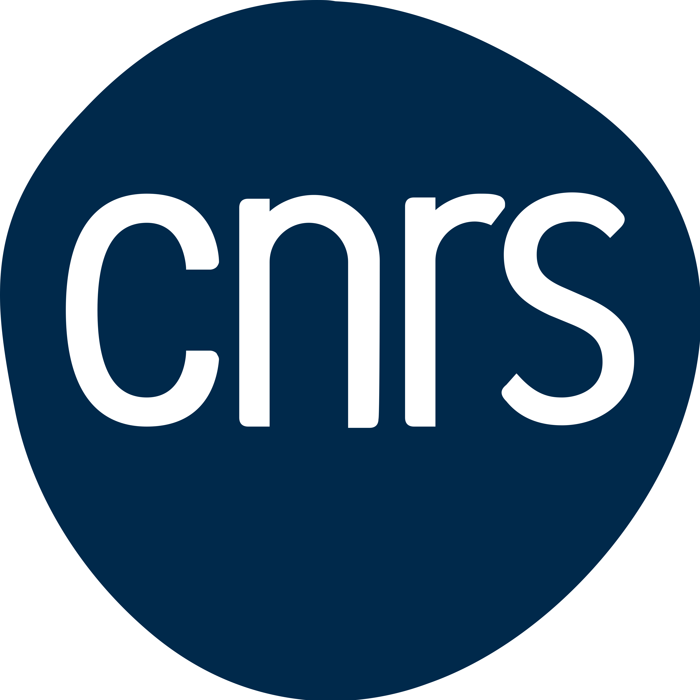

Stage M1
3 mois
Stagiaire en laboratoire de recherche
CNRS · Laboratoire FAST
Étude numérique en deux dimensions puis en trois dimensions d’un film liquide tombant sur un substrat corrugué, réalisée au laboratoire FAST (Fluides, Automatique et Systèmes Thermiques).
Encadrement
Georg Dietze · Sophie Mergui